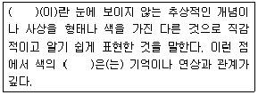
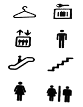
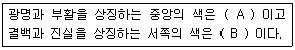

컬러리스트산업기사 (2014-03-02 기출문제)
1과목: 색채심리
1. 착시에 대한 설명 중 틀린 것은?
- 망막에 미치는 빛자극에 대한 주관적 해석
- 기억의 무의식적 추론에 의해 나타나는 현상
- 대상을 물리적 실제와 다르게 지각하는 현상
- 색채잔상과 대비현상이 대표적인 예
(정답률: 알수없음)

2. 색채의 일반적인 정서적 반응과 색의 3속성 간의 대응이 틀린것은?
- 흥분과 침착 - 색상과 채도의 영향
- 시간과 속도 - 색상과 채도의 영향
- 무게 - 명도의 영향
- 온도 - 명도의 영향
(정답률: 85%)
3. 색채 정보를 수집하기 위한 방법 중 가장 흔히 적용되는 연구방법은?
- 실험연구법
- 현장관찰법
- 패널조사법
- 표본조사법
(정답률: 알수없음)
4. 청색의 민주화(Blue Civilization)는 어떤 의미인가?
- 서구문화권 국가의 성인 절반 이상이 청색을 매우 선호한다.
- 성인이 되면 색채 선호도가 변화한다.
- 성별 구분 없이 청색을 선호한다.
- 지역적인 색채선호도의 차이가 있다.
(정답률: 60%)
5. 색채와 공감각에서 촉감 및 무게감과 색채의 연결이 틀린 것은?
- 부드러움 - 밝은 분홍
- 촉촉함 - 파랑
- 건조함 밝은 청록
- 가벼움 - 하양
(정답률: 73%)
6. 색채 경험에 대한 설명 중 틀린 것은?
- 색채경험은 주위 환경에 따라 다르게 지각된다.
- 색채경험은 문화적 배경의 영향을 받는다.
- 색채경험은 객관적 현상이다.
- 지역과 풍토는 색채경험에 영향을 끼친다.l
(정답률: 알수없음)
7. 회사 간의 경쟁으로 인해 가격, 광고, 유치경쟁이 치열하게일어나는 제품수명주기단계는?
- 도입기
- 성장기
- 성숙기
- 쇠퇴기
(정답률: 73%)
8. 색채계획의 효과가 아닌 것은?
- 눈의 피로를 막는다.
- 건물을 유지, 보호하는데 용이하다.
- 일의 능률을 높인다.
- 개인의 감각에 의한 장식 효과를 높인다.
(정답률: 알수없음)
9. 색의 연상에서 잘못 짝지어진 것은?
- 파랑 - 청순, 시원, 청결, 상쾌
- 빨강 - 정열, 공포, 흥분, 불안
- 노랑 - 안정, 평화, 순진, 이상
- 보라 - 고귀, 화려, 사랑, 우아
(정답률: 65%)
10. 대상별 색채선호 유형에 대한 설명 중 틀린 것은?
- 연령이 낮을수록 원색계열과 밝은 톤을 선호한다.
- 여성은 밝고, 맑은 톤을 선호한다.
- 남성은 비교적 어두운 톤의 청색, 갈색을 선호한다.
- 어른들은 노랑, 흰색, 빨강의 순으로 선호한다.
(정답률: 알수없음)
11. 의미척도법(SD:Semantic Differential Method)의 설명으로 틀린 것은?
- 미국의 색채 전문가 파버 비렌이 고안하였다.
- 반대의미를 갖는 형용사 쌍을 카테고리 척도에 의해 평가한다.
- 제품, 색, 음향, 감촉 등 다양한 대상의 인상을 파악하는방법으로 많이 사용되고 있다.
- 의미공간을 효율적으로 정의하기 위해서는 그 공간을 대표하는 차원의 수를 최소로 결정할 필요가 있다.
(정답률: 59%)
12. 동서양의 문화에 따른 색채 정보의 활용이 옳게 연결된 것은?
- 동양의 신성시되는 종교색 - 노랑
- 중국의 왕권을 대표하는 색 - 빨강
- 봄과 생명의 탄생 - 파랑
- 평화, 진실, 협동 - 녹색
(정답률: 20%)
13. 동서양의 문화적 차이로 인해, 서양에서는 순결함과 고귀함을상징하나 동양에서는 죽음과 연결되어 장례식을 대표하는 색은?
- 흰색
- 검정색
- 핑크색
- 파란색
(정답률: 92%)
14. 다음 중 색채계획 시 유행색에 가장 민감하게 해야 하는 것은?
- 자동차
- 패션용품
- 사무용품
- 가전제품
(정답률: 93%)
15. 보기의 ( )에 공통적으로 들어갈 말은?

- 기호
- 상징
- 공감각
- 유행
(정답률: 82%)
16. 색채정보 수집방법으로 가장 용이한 표본조사법의 표본 추출방법이 틀린 것은?
- 표본은 특정조건에 맞추어 추출한다.
- 표본의 선정은 올바르고 정확하며 편차가 없는 방식으로 한다.
- 표본선정은 연구자가 대규모의 모집단에서 소규모의표본을 뽑아야 한다.
- 표본은 모집단을 모두 포괄할 목록을 반드시 가지고 있어야한다.
(정답률: 50%)
17. 색채의 감정적인 효과 중 가장 화려한 느낌을 주는 색채는?
- 저채도의 난색
- 저채도의 한색
- 고채도의 한색
- 고채도의 난색
(정답률: 93%)
18. 안전색으로서 빨강의 일반적인 의미는?
- 안전 조건
- 지시
- 주의
- 위험
(정답률: 87%)
19. 색채치료에 대한 설명 중 틀린 것은?(오류 신고가 접수된 문제입니다. 반드시 정답과 해설을 확인하시기 바랍니다.)
- 자연적인 면역력을 증강시켜 질병의 치료 효과를 높인다.
- 색마다 지닌 고유의 에너지를 각각의 질병에 맞도록처방한다.
- 색채를 적용하는 원리에 있어 괴테의 색채심리 이론과는대립된다.
- 빨강은 우울증 치료에, 보라는 불면증 치료에 효과적이다.
(정답률: 알수없음)
20. 색채조절에 있어서 심리효과에 대한 설명 중 틀린 것은?
- 색채의 감정적인 효과에 의해 한색계로 도색을 하면심리적으로 시원하게 느껴진다.
- 큰 기계부위의 아래 부분은 어두운 색으로 하고 위 부분은밝은 색으로 해야 안정감이 있다.
- 눈에 띄어야 할 부분은 한색으로 하여 안전을 도모한다.
- 고채도의 색은 화사하고, 저채도의 색은 수수하므로 이를이용하여 적용한다.
(정답률: 알수없음)
2과목: 색채디자인
21. 다음 중 디자인사에 나타난 특징으로 틀린 것은?
- 1900년대 아르누보는 인상주의 영향을 받아 부드럽고환상적인 분위기의 파스텔 색조가 유행하였다.
- 1910년대는 오리엔탈리즘의 영향을 받아 밝고 선명한색조의 오렌지, 노랑, 청록색 등이 주조색으로 사용 되었다.
- 1930년대는 미국이 경제 대공항을 겪던 혼란의 시기로 당시의 어려운 상황을 극복하고자 밝고 화사한 색조가유행하였다.
- 1950년대에는 제2차 세계대전 이후 사회 안정기로 부드러운파스텔색조가 등장하였다.
(정답률: 50%)
22. 다음 중 제품디자인을 공예디자인과 구별 짓는 가장 중요한요인은?
- 복합재료의 사용
- 대량생산
- 판매가격
- 제작기간
(정답률: 92%)
23. 패션디자인의 원리에 대한 설명 중 틀린 것은?
- 균형은 디자인 요소의 시각적 무게감에 의하여 이뤄진다.
- 리듬은 디자인의 요소 하나가 크게 강조될 때 느껴진다.
- 강조는 보는 사람의 시선을 끄는 흥미로운 부분이 있을 때느껴진다.
- 비례는 디자인 내에서 부분들 간의 상대적인 크기, 관계를의미한다.
(정답률: 85%)
24. '아름답게 쓰다'라는 사전적 의미를 가진 표현 기법으로 가독성뿐만 아니라 손 글씨의 자연스러운 조형미를 효과적으로 나타내는 것은?
- 캘리그래피(Calligraphy)
- 일러스트레이션(Illustration)
- 편집디자인(Editorial Design)
- 아이콘(Icon)
(정답률: 알수없음)
25. 산업화 과정의 부산물인 생태계 파괴가 인류를 위협하는 상황에서 현대 디자인이 염두에 두어야 할 요소는?
- 세계화
- 통일성
- 고유무화
- 친자연성
(정답률: 알수없음)
26. 다음 중 동적, 불안정, 강인함의 느낌인 선은?
- 수직선
- 곡선
- 사선
- 수평선
(정답률: 73%)
27. 소비자가 상품을 구매하는 데서 판매 촉진의 효과를 위하여직접 전달 형식으로 이루어지는 광고에 해당되지 않는 것은?
- 매스미디어 광고
- P.O.P 광고
- 판매시점광고
- 구매시점광고
(정답률: 알수없음)
28. 디자인의 원리들로 짝지어진 것은?
- 대비(Contrast), 균형(Balance)
- 방향(Direction), 질감(Texture)
- 교체(Alternation), 크기(Size)
- 명암(Value), 색채(Color)
(정답률: 알수없음)
29. 모든 조형예술의 최초의 요소로 위치만 있는 조형 요소는?
- 면
- 선
- 점
- 입체
(정답률: 75%)
30. 크리에이티브 제작 부서의 구성원 중 광고제작내용을 사진으로 찍거나 그림으로 그리고, 또는 그래픽으로 가장 강하게 형상화해 내는 사람을 일컫는 것은?
- 카피라이터
- 아트 디렉터
- 광고제작 책임자
- 상업 광고문 기획자
(정답률: 50%)
31. 공공시설물 디자인 중 보행시설물에 해당하는 것은?
- 지하차도
- 에스컬레이터
- 주차시설
- 버스정류장
(정답률: 알수없음)
32. 표현기법 중 완성될 제품에 대한 예상도로서 실물의 형태나 색채 및 재질감을 실물과 같이 충실하게 표현하는것을 의미하는 것은?
- 스크래치 스케치
- 렌더링
- 투시도
- 모델링
(정답률: 50%)
33. 레이아웃(Layout)에 대한 설명 중 틀린 것은?
- 사진과 그림이 문자보다 강조되어야 한다.
- 시각적 소재를 효과적으로 구성, 배치하는 것이다.
- 전체적으로 통일과 조화를 고려해야 한다.
- 가독성이 있어야 한다.
(정답률: 알수없음)
34. 검정, 회색, 녹색의 조합이 대표적인 배색이었으며 주로강렬한 색조와 단순한 디자인을 추구했던 1920년대의디자인 사조는?
- 아르누보
- 아르데코
- 사실주의
- 키치
(정답률: 34%)
35. 다음의 그림과 관련이 있는 것은?

- Symbol
- Pictogram
- Sign
- ISOTYPE
(정답률: 알수없음)
36. 다음 디자인의 조건 중 일정한 목적에 대달하는데 적합한 실용성과 요구되는 기능 충족을 말하는 것은?
- 경제성
- 심미성
- 합목적성
- 독창성
(정답률: 82%)
37. 1980년대 후반에 확산된 에콜로지(Ecology) 경향으로 유행한색은?
- 녹색, 파란색, 시안(Cyan)의 자연 색조
- 빨강, 검정, 흰색, 노랑의 대비 색조
- 연보라, 하늘색, 미색, 연분홍의 파스텔 색조
- 흰색, 검정, 회색의 무채색
(정답률: 알수없음)
38. 생태학적 디자인 원리와 거리가 먼 것은?
- 환경친화적인 디자인
- 리사이클링 디자인
- 에너지 절약형 디자인
- 생물학적 단일성을 강조하는 디자인
(정답률: 71%)
39. 대형 행사장의 색채 계획을 하고자 한다. 컬러를 선정할 때사용하는 컬러 샘플(Color Sample)의 명도나 채도를 실제보다낮추어서 고려하는 것이 바람직하다. 이는 무엇 때문인가?
- 동화현상
- 면적효과
- 색채대비효과
- 착시효과
(정답률: 60%)
40. 옥외광고물의 색채설계 시 유의할 사항이 아닌 것은?
- 시인성과 가독성 확보를 우선하여 디자인한다.
- 정보를 자세히 전달하기 위해 강렬한 색채를 사용한다.
- 교통약자, 노약자 등을 고려한 색채계획을 한다.
- 도시경관과 조화되도록 하여 전체적인 질서를 부여한다.
(정답률: 57%)
3과목: 섹채관리
41. 광택의 평가에 대한 설명 중 옳은 것은?
- 광택은 도막층내 재질의 색소에 관련되는 특성이다.
- 도장면, 타일의 광택에 Gs(75)를 적용한다.
- 선명도, 광택도는 비교적 저광택도의 표면검사에 이용된다.
- 광택범위가 넓은 일반적 대상물의 경우 60도 경면 광택도로측정한다.
(정답률: 40%)
42. 광원에 대한 설명 중 틀린 것은?
- 백열등은 일반적으로 적외선 영역에 가까운 가시광선의분광분포 특성을 보인다.
- 텅스텐 할로겐 전구는 금속 할로겐 화합물을 첨가하여만든 고압수은등이다.
- 형광등은 형광물질의 종류에 따라 다양한 광원색을 만들 수있다.
- 발광다이오드는 전장발광의 원리로 빛을 방출한다.
(정답률: 19%)
43. 도장하고자 하는 표면에 도막을 형성시켜 안료를 고착시켜주는 역할을 하는 것은?
- 컬러런트
- 염료
- 전색제
- 컴파운드
(정답률: 80%)
44. 작은 CMYK 하프톤 점들을 사용하여 세부 이미지를 표현할 수 있으며, 점들의 크기보다는 수를 변화시켜 색조를 표현하므로 출력된 이미지는 질적 저하 없이 생산성을 향상시킬 수 있는 방법은?
- FM스크리닝
- 매트릭스
- 프로파일
- 슈퍼샘플링
(정답률: 30%)
45. 물체색은 광원과 조명방식에 따라 변한다. 이와 관련한 설명이 옳은 것은?
- 동일 물체가 광원에 따라 각기 다른 색으로 보이는 것을광원의 연색성이라 한다.
- 모든 광원에서 항상 같은 색으로 보이는 현상을 메타머리즘이라고 한다.
- 백열등 아래에서는 한색계열 색채가 돋보인다.
- 형광등 아래에서는 난색계열 색채가 돋보인다.
(정답률: 70%)
46. CCM 시스템을 이용하여, 최소 2개 이상의 기준 광원하에서기준샘플과 동일해 보이는 색을 만들기 위한 색료 조합을예측 하고자 할 때 CCM 시스템에 반드시 포함되어야하는 요소가 아닌 것은?
- 최적의 컬러런트 조합
- 컬러런트 데이터베이스
- CIE 표준광원 연색 지수 계산
- 광원 메타메리즘 정도 계산
(정답률: 24%)
47. 다음의 용어들을 설명한 것 중 틀린 것은?
- dpi - 인치당 점의 수
- lpi - 인치당 선의 수
- spi - 인치당 스크린의 수
- ppi - 인치당 필셀 수
(정답률: 42%)
48. 디스플레이의 일종으로 자기발광성이 없어 후광이 필요하지만동작 전압이 낮아 소비전력이 적고 휴대용으로 쓰일 수 있어손목시계, 컴퓨터 등에 널리 쓰이고 있는 것은?
- LCD(Liquid Crystal Display)
- CRTD(Cathode-Ray Tube Display)
- CRT-Trinitron
- CCD(Charge Coupled Device)
(정답률: 79%)
49. 육안 조색에 의한 색채 관측 시 갖추어야 할 환경조건에 해당하지 않는 것은?
- 관측함의 측벽은 N9 이상이 적합하다.
- 관측함은 복수의 표준광원이 있어야 한다.
- 관측면 바닥은 무광택 무채색 이어야 한다.
- 바닥면의 크기는 30*40cm 이상이 적합하다.
(정답률: 알수없음)
50. 다음 중 그래픽 카드의 종류에 따라 변하는 요소가 아닌 것은?
- 최대 해상도(Resolution)
- 아날로그 신호화의 처리 속도
- 재생주기
- 표현할 수 있는 색채의 수
(정답률: 40%)
51. 다음 중 염료에 대한 설명으로 옳은 것은?
- 가는 분말형태로 매질에 고착된다.
- 페인트, 잉크, 플라스틱 등에 섞어 사용된다.
- 불투명한 색상을 띤다.
- 물에 녹는 수용성이거나 액체와 같은 형태이다.
(정답률: 77%)
52. 국제 산업표준의 디지털 디바이스 프로파일을 규정하고 관리하는 곳은?
- ICC(International Color Consortium)
- ISCC(Inter-Society Color Council)
- ISO(International Organization for Standardization)
- ITU(International Telecommunication Union)
(정답률: 34%)
53. 다음 중 측색 결과로 얻게 되는 데이터에 대한 설명으로 틀린것은?
- CIEXYZ : CIE 삼자극치
- CIEYxy : CIE 1931 색좌표 x,y와 시감반사율 Y
- CIE1976 L*a*b* : 균등색공간에서 표현되는 측색 데이터
- CIEL*C*h* : L*은 명도, C*는 채도, h*는 파장
(정답률: 80%)
54. 색채의 측정에 관한 설명 중 틀린 것은?
- 색채 측정은 객관적인 색채값의 지정과 관리 측면에서중요한 역할을 한다.
- 객관적인 색채의 측정은 색채계(Color Meter)를 이용한다.
- 국제적인 측정표준과 색채 표시 기준이 설정되어 있어이를 기준으로 색채 측정이 이루어진다.
- 색채계보다는 눈으로의 측색이 편차요인이 없다.
(정답률: 알수없음)
55. 컬러 인덱스(CII : Color Index International)란 무엇인가?
- 안료회사에서 안료의 원산지를 표기한 데이터
- 안료의 사용방법에 따라 분류하고, 안료의 고유 번호를 표기한 것
- 안료를 판매할 가격에 따라 분류한 데이터
- 안료를 각각 생산 국적에 따라 분류한 데이터
(정답률: 82%)
56. 필터식 색채계의 설명이 옳은 것은?
- 다양한 광원 조건에서의 색좌표를 산출할 수 있다.
- 삼자극치 값을 직접 측정하게 된다.
- 광원과 시야에서의 색채값을 동시에 산출할 수 있다.
- 자동배색장치의 색측정 장치로 사용된다.
(정답률: 알수없음)
57. 연색성과 관련된 설명이 틀린 것은?
- 광원의 분광 분포가 고르게 연결된 정도를 말한다.
- 흑체복사를 기준으로 할 때 형광등이 백열등 보다 연색성이떨어진다.
- 육류, 소시지 등을 연출할 때는 적색광원이 적합하다.
- 연색지수의 수치가 0에 가까울수록 기준광과 비슷하게물체의 색을 보여준다.
(정답률: 46%)
58. 육안 검색 시 주의 사항으로 옳은 것은?
- 작업면의 크기는 적어도 400mm × 500mm 이상인 것이바람직하다.
- 조명의 균제도는 0.8이상이어야 한다.
- 비교하는 색의 명도가 3이하인 어두운 색은 조도를1000Lux 이상으로 한다.
- 자연광일 경우 일출 3시간 후부터 일몰 3시간 전까지의 남쪽하늘 주광을 통제한 여건에서만 육안검색이 가능하다.
(정답률: 알수없음)
59. 색채의 육안 검색 시 주의해야할 색채 조절의 필수 항목이아닌 것은?
- 광택의 차이
- 명도의 차이
- 색상의 차이
- 채도의 차이
(정답률: 알수없음)
60. 측색의 기하방식 중 적분구 내벽에 빛을 조사하고 광검출기가시료를 향하게 하여 반사율을 측정하는 방식은?
- 0°:45°지향성 방식
- 45°환상 : 0°방식
- 확산 : 확산방식
- 확산 : 0°방식
(정답률: 34%)
4과목: 색채지각의이해
61. 파장이 동일해도 색의 채도가 높아짐에 따라 색이 달라 보이는 현상(효과)은(는)?
- 색음 현상
- 애브니 효과
- 리프만 효과
- 베졸트 브뤼케 현상
(정답률: 50%)
62. 다음 중 색에 대한 설명으로 틀린 것은?
- 유채색은 일부 파장만을 강하게 반사하는 선별적 반사를한다.
- 여러 가지 파장이 고르게 반사되는 경우에 무채색으로지각된다.
- 불투명한 물체의 색은 표면의 반사율에 의해 결정된다.
- 백열전구의 빛은 장파장에 비해 단파장이 상대적으로강하다.
(정답률: 72%)
63. 인쇄 과정 중에 원색분판 제판과정에서 시안(Cyan)분해 네거티브 필름을 만들기 위해 사용하는 색 필터는?
- 시안색 필터
- 빨간색 필터
- 녹색 필터
- 파란색 필터
(정답률: 67%)
64. 다음 중 가법혼색이 아닌 것은?(오류 신고가 접수된 문제입니다. 반드시 정답과 해설을 확인하시기 바랍니다.)
- 컴퓨터 모니터
- 무대조명
- 전기스탠드
- 잉크젯프린터
(정답률: 0%)
65. 색의 동화현상에 관한 설명 중 옳은 것은?
- 문양색과 배경색이 차이가 클 경우 더 잘 일어난다.
- 색이 다른 색 위에 넓혀가는 것처럼 보이기 때문에 전파효과라고도 부른다.
- 색을 느끼는 관찰자의 심리적 태도와는 무관하게 동일하게일어나는 현상이다.
- 음성잔상의 일종이라고 할 수 있다.
(정답률: 알수없음)
66. 차가운 색이나 채도가 낮은 색은 뒤로 물러나는 듯한 성격을지니고 있다. 이러한 색을 무엇이라고 하는가?
- 팽창색
- 수축색
- 진출색
- 후퇴색
(정답률: 80%)
67. 잔상에 대한 설명으로 옳은 것은?
- 잔상의 출현은 자극의 강도와 지속시간에 반비례한다.
- 영화필름에서의 영상은 잔상을 이용한 경우이다.
- 잔상이 원래의 감각과 같은 밝기나 색상을 가질 때 음성잔상이라고 한다.
- 양성잔상은 원래의 색과 보색관계에 있는 색을 경험하는 것이다.
(정답률: 37%)
68. 가법혼색의 설명으로 틀린 것은?
- 병치혼합, 회전혼합도 일종의 가법혼색이다.
- 빛의 혼합과 같이 빛에 빛을 더하여 얻어지는 원리에 의한것이다.
- 인상파 화가 쇠라의 점묘법에 의한 그림의 혼색 효과에서나타나는 혼색방법이다.
- 가법혼색은 혼색할수록 점점 어두운 색이 된다.
(정답률: 알수없음)
69. 다음 중 채도의 속성으로 구별될 수 있는 색은?
- 흰색
- 회색
- 검정색
- 노란색
(정답률: 80%)
70. 간판 제작 시 글씨를 잘 보이게 할 수 있는 색 활용법으로가장 적합한 것은?
- 배경색과 글씨색이 유사조화 배색이 되게 한다.
- 배경색과 글씨색의 명도 차를 크게 한다.
- 배경색과 글씨색이 동일 톤 배색이 되게 한다.
- 배경색과 글씨색 모두 진출하는 색을 적용한다.
(정답률: 100%)
71. 계시대비에 대한 설명으로 옳은 것은?
- 빨간색을 한참 본 후 노란색을 보면 초록 기미를 띤 노랑으로 보인다.
- 배경과 도안의 관계에서 색과 색이 접할 경우에 생기는대비이다.
- 명도가 다른 두 색이 서로의 영향으로 밝은 색은 더 밝게어두운 색은 더 어둡게 보이는 현상이다.
- 탁한 바탕색 위에서는 실제 색보다 더 맑게 보인다.
(정답률: 73%)
72. 교통안전 표지판에 주로 활용되는 색의 성질은?
- 상징성
- 심미성
- 운동성
- 주목성
(정답률: 80%)
73. 무대 위 흰 벽면에 빨간색 조명과 녹색 조명을 동시에 비추면어떤 색으로 보이는가?
- 흰색
- 노란색
- 회색
- 주황색
(정답률: 알수없음)
74. 태양빛과 형광등에서 다르게 보이는 물체색이 시간이 지나면서 같은 색으로 느껴지는 것은?
- 명순응
- 색순응
- 암순응
- 색지각
(정답률: 알수없음)
75. 다음 중 전기발광과 관련이 있는 것은?
- 구조용 안전신호
- 루시페린(Luciferin)
- LED(Light Emitting Diode)
- 개똥벌레
(정답률: 80%)
76. 태양빛을 프리즘에 통과시켰을 때 나타나는 색띠와 관련없는 것은?
- 빛의 분산
- 빛의 스펙트럼
- 빛의 굴절
- 빛의 간섭
(정답률: 알수없음)
77. 빛이 거친 표면에 입사되었을 때 여러 방향으로 흩어져 나가는 현상으로, 맑은 날의 하늘이 더욱 파랗게 보이거나해가 질 때 붉은 노을이 생기는 것을 설명할 수 있는 것은?
- 산란
- 반사
- 굴절
- 간섭
(정답률: 알수없음)
78. 색의 진출과 후퇴 효과에 대한 설명으로 옳은 것은?
- 단파장의 색은 장파장의 색보다 후퇴되어 보인다.
- 고명도의 색은 저명도의 색보다 후퇴되어 보인다.
- 난색은 한색보다 후퇴되어 보인다.
- 수축색은 일반적으로 진출되어 보인다.
(정답률: 알수없음)
79. 상의 초점이 맺히는 망막의 부위는?
- 동공
- 수정체
- 유리체
- 중심와
(정답률: 알수없음)
80. 파란 바탕 위의 노란색 글씨가 더 잘 보이게 하기 위한방법으로 적합하지 않는 것은?
- 바탕색의 채도를 낮춘다.
- 글씨색의 채도를 높인다.
- 바탕색과 글씨색의 명도차를 줄인다.
- 바탕색의 명도를 낮춘다.
(정답률: 77%)
5과목: 색채체계의이해
81. 혼색계의 특징으로 올바른 것은?
- 환경을 임으로 설정하여 측정할 수 있다.
- 측색기 등 전문기기를 필요로 하지 않는다.
- 지각적으로 일정하게 배열되어 있다.
- 오스트발트, 먼셀, 맥스웰이 크게 발전시켰다.
(정답률: 31%)
82. 다음 중 색채표준의 조건이 아닌 것은?
- 체계적이고 일관된 질서
- 국제적으로 호환되는 기록 방법
- 특수 안료로의 재현 가능
- 목적이 범용적이고 실용적
(정답률: 75%)
83. 다음 설명이 ( )에 들어갈 오방색이 옳은 것은?

- A : 황색, B : 백색
- A : 청색, B : 황색
- A : 백색, B : 황색
- A : 황색, B : 홍색
(정답률: 90%)
84. 먼셀의 균형이론 관점에서 볼 때 가장 이상적인 조화로묶인 것은?
- 5Y 8/3, 5R 3/7
- 7.5G 6/4, 2.5P 6/4
- 2.5R 2/2, 5B 5/5
- 5R 7/5, 5BG 3/5
(정답률: 27%)
85. P.C.C.S(Practical Color Coordinate System) 색체계의구성 특징에 대한 설명으로 가장 올바른 것은?
- 명도기호는 먼셀 색체계의 명도에 맞추어 백색은 9.5,흑색은 1.5로 하여 총 10단계로 구성
- 물체색을 대상으로 함으로써 색료의 3원색을 기본으로 하여색상환을 구성
- 채도는 9단계가 되도록 하여 모든 색상의 최고 채도를9s로 표시
- R, Y, G, B, P의 5색상과 각 색의 심리보색을 대응시켜10색상을 기본 색상으로 구성
(정답률: 알수없음)
86. 오스트발트 색체계의 무채색계열을 나타내는 기호를 순서대로(흰색 → 검정) 나열한 것은?
- a → b → c → d → e → f → g → h
- h → f → g → e → d → c → b → a
- a → c → e → g → i → l → n → p
- p → n → l → i → g → e → c → a
(정답률: 알수없음)
87. 먼셀 기호로 표시할 때 5Y8/10의 설명으로 올바른 것은?
- 색상 5Y, 명도 8, 채도 10
- 색상 Y8, 명도 10, 채도 5
- 명도 5, 색상 Y8, 채도 10
- 색상 5Y, 채도 8, 명도 10
(정답률: 알수없음)
88. Pantone(팬톤) 색표집에 대한 서명 중 틀린 것은?
- 미국 팬톤사의 자사 색표집이다.
- 도료를 조색하여 만든 색표집이다.
- 실용과 필요에 따라 제작되어 색의 기본 속성에 따라배열되어 있지 않다.
- 기존 4도 인쇄의 단점을 극복하기 위해 개발된 6도 인쇄시스템인 헥사크롬이 있다.
(정답률: 10%)
89. 다음 중 다양한 색표지의 책을 진열하기 위한 책장의 색으로가장 적합한 것은?
- 흰색
- 노란색
- 연두색
- 녹색
(정답률: 알수없음)
90. 오스트발트 색상환의 설명으로 옳은 것은?
- 무채색 축을 중심으로 32색상의 등색상 삼삭형이 배열된다.
- 헤링의 반대색설에 따라 Yellow, Ultramarine Blue, Red,Sea Green을 기본 4색으로 한다.
- 4원색의 중간색을 배열하여 8색을 만들고, 다시 4등분하여번호를 붙이면 32색이 된다.
- 중간색은 Orange, Blue, Pink, Green Yellow이다.
(정답률: 55%)
91. KS 계통색이름에서 수식형용사와 약호가 바르게 짝지어진 것은?
- 밝은 - wh
- 연(한) - sf
- 탁한 - dp
- 어두운 - dk
(정답률: 알수없음)
92. KS 색이름의 설명 중 틀린 것은?
- 유채색의 기본 색이름은 빨강, 주황, 노랑, 연두, 초록,청록, 파랑, 남색, 보라, 자주이다.
- 무채색의 기본 색이름은 하양, 회색, 검정이다.
- 주황의 대응영어는 Orange이고, 약호 O로 표기한다.
- 회색의 대응영어는 Gray이고, 약호 Gy로 표기한다.
(정답률: 알수없음)
93. 먼셀 색체계에서 N5와 비교한 N2의 상태는?
- 채도가 높은 상태이다.
- 채도가 낮은 상태이다.
- 명도가 높은 상태이다.
- 명도가 낮은 상태이다.
(정답률: 55%)
94. 져드(D. Judd)에 의해 제시된 색채조화의 원리 중, 관찰자에게 익숙한 자연 경관의 색을 선택하여 배색하면조화롭다는 성질을 설명하는 것은?
- 친근성의 원리
- 질서의 원리
- 유사성의 원리
- 비모호성의 원리
(정답률: 73%)
95. CIE L*a*b*에 대한 설명으로 옳은 것은?
- a*축은 초록, 파랑을 나타낸다.
- a*축은 빨강, 노랑을 나타낸다.
- b*축은 빨강, 초록을 나타낸다.
- b*축은 노랑, 파랑을 나타낸다.
(정답률: 알수없음)
96. NCS 색표가 S7020-R20B의 설명으로 틀린 것은?
- S7020에서 70은 흑색도를 나타낸다.
- S7020에서 20은 백색도를 나타낸다.
- R20B는 빨강 80%를 의미한다.
- R20B는 파랑 20%를 의미한다.
(정답률: 알수없음)
97. 수수한 느낌이 가장 잘 표현된 색은?
- 고채도의 난색 계열
- 고채도의 한색 계열
- 저채도의 난색 계열
- 저채도의 한색 계열
(정답률: 알수없음)
98. CIE 색체계에 대한 설명 중 틀린 것은?
- CIE LAB과 CIE LUV는 CIEXYZ체계에서 변형된 색공간체계이다.
- 색채공간을 수학적인 논리에 의하여 구성한 것이다.
- XYZ체계는 삼원색 RGB 3자극치의 등색함수를 수학적으로변환하는 체계이다.
- 지각적 등간격성에 근거하여 색입체로 체계화한 것이다.
(정답률: 54%)
99. 오스트발트 색채조화론의 기본 개념은?
- 조화란 유사한 것을 말한다.
- 조화란 질서가 있을 때 나타난다.
- 조화는 대비와 같다.
- 조화란 중심을 향하는 운동이다.
(정답률: 67%)
100. 다음 중 관용색 - 계통색 - 색의 3속성에 의한 표시가 틀린것은?
- 와인레드 - 선명한 빨강 - 5R 2/8
- 코코아색 - 탁한 갈색 - 2.5YR 3/4
- 옥색 - 흐린 초록 - 7.5G 8/6
- 포도색 - 탁한 보라 - 5P 3/6
(정답률: 알수없음)